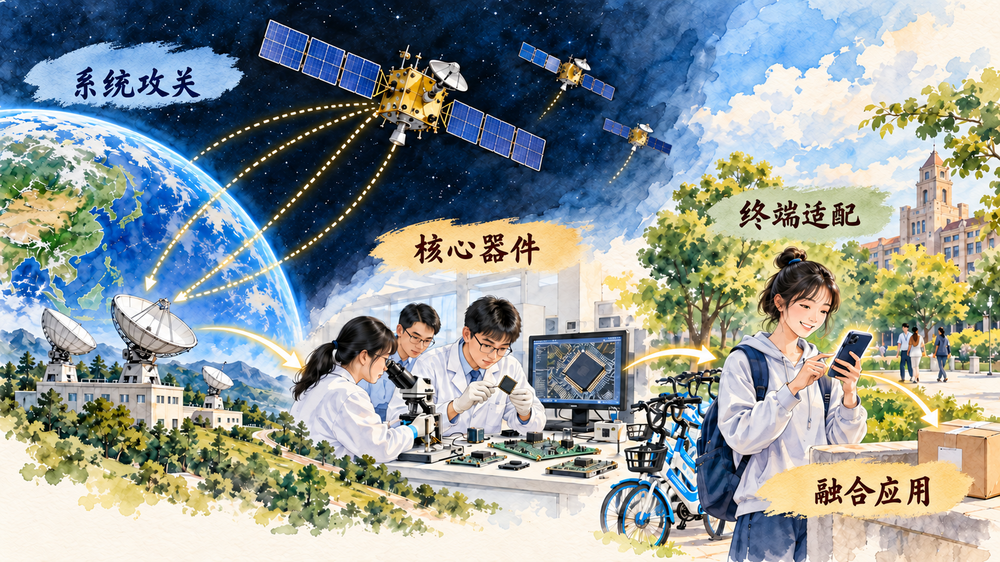

从关键技术突破到国家创新体系整体效能
科技自立自强是国家强盛之基、安全之要。本节先说明科技能力为什么影响发展全局，再分析关键核心技术攻关，最后进入自主创新能力和新型举国体制。科技强国建设既需要科学发现和技术突破，也需要教育、人才、平台、企业、产业和制度共同作用。
一、科技强则国家强
科技深刻影响生产力发展、人民生活和国际竞争。新的科学发现能够打开认识世界的新空间，关键技术能够形成新产品、新产业和新服务，数字技术和工程系统能够提高公共服务与社会治理能力。科技实力由此成为综合国力的重要组成部分。
科技竞争还涉及发展主动权和安全。重要产业的关键技术、基础软件、核心器件和重大装备影响产业链供应链稳定。提高科技自立自强水平，需要形成自主提出问题、组织研究、完成工程验证和持续迭代的能力，并在开放合作中参与全球知识交流。
二、打赢关键核心技术攻坚战
关键核心技术具有基础性、战略性和带动性。它们往往研发周期长、投入大、风险高，还需要多个学科、单位和产业环节协同。攻关由目标牵引、基础研究、技术研发、工程验证、产业应用和人才培养共同推进。
新型举国体制，是在社会主义市场经济条件下，围绕国家重大战略需求，发挥党的领导和社会主义制度集中力量办大事的政治优势，统筹政府、市场和社会力量，组织国家战略科技力量和各类创新主体协同攻关。它既强调国家战略组织，也发挥企业作为创新主体、市场配置资源和应用场景验证的作用。
判断一项协同攻关，可以沿着五个问题展开：任务是否来自重大战略需求；各主体承担什么责任；基础研究、技术开发与工程应用怎样衔接；资源怎样统筹；成果怎样在应用反馈中继续完善。
案例研究｜北斗怎样从国家重大工程进入一部手机
在手机地图上看到定位圆点时，使用者接触到的是屏幕上的一个符号。这个符号背后同时运行着卫星、地面站、芯片、天线、地图和软件算法。北斗卫星导航系统由空间段、地面段和用户段组成：卫星播发导航信号，地面系统完成运行控制、监测与信息处理，用户终端根据多颗卫星的信号计算位置和时间。手机厂商还要完成芯片与天线适配，地图应用再把坐标转化为道路、方向和到达时间。
北斗工程按照“三步走”发展战略推进。北斗一号服务中国，验证我国自主建设卫星导航系统的能力；北斗二号服务亚太地区，扩展连续导航定位和授时能力；2020 年北斗三号全球卫星导航系统建成开通，形成全球服务能力。北斗三号空间段由不同轨道卫星组成，系统还提供短报文通信、国际搜救等特色服务。
从第一颗卫星到手机里的定位点，需要一条漫长的协同链。卫星总体、原子钟、星间链路和运载发射保障空间系统运行；测控站和运控中心维护星座状态；科研机构和企业研制芯片、模组、天线与板卡；手机、汽车、农业机械和物流设备完成终端适配；应用开发者把时空信息转化为导航、调度、测量和安全服务。每一个环节都有明确任务，也要通过统一标准交换信息。
一次手机定位可以分成四步理解。第一，多颗北斗卫星持续播发带有精确时间和轨道信息的信号。第二，手机芯片接收不同卫星信号，根据传播时间估算距离；同时接收多颗卫星，才能计算用户的位置和时间。第三，手机操作系统把坐标交给地图应用，地图把经纬度匹配到道路和建筑。第四，导航软件结合道路数据、实时交通与用户目的地规划路线，并在位置变化后重新计算。屏幕上的蓝点由国家空间基础设施、核心器件和软件服务共同生成。
北斗三号系统还表现出多轨道协同特征。中圆地球轨道卫星提供全球覆盖，倾斜地球同步轨道和地球静止轨道卫星加强区域服务。星间链路使卫星之间可以交换信息，地面运控系统持续监测轨道和时钟状态。导航定位需要精确时间，原子钟、测量误差修正和系统连续运行共同影响最终精度。
系统建成以后，创新继续向应用端延伸。数字中国建设峰会网站 2025 年公布的信息显示，2024 年我国卫星导航与位置服务产业总体产值达到 5758 亿元，其中与卫星导航技术研发和应用直接相关的核心产值为 1699 亿元。国内支持北斗的智能手机出货量达到 2.88 亿部，占比 98%；主要电子地图提供商的北斗高精度车道级导航覆盖全国 99% 以上城市和乡镇道路。北斗相关产品和服务已输出到 140 多个国家和地区。
生活中的使用场景使系统价值变得可见。网约车平台根据位置匹配车辆与乘客，物流企业用轨迹信息安排车辆和查询货物，农业机械利用高精度定位沿规划路线播种和收割，应急人员在通信条件受限的地区使用短报文传递信息。高精度车道级导航还要把卫星定位、惯性传感器和道路模型结合起来，帮助车辆识别所在车道。用户每一次移动、设备每一次接收信号，也会向企业提出精度、能耗、速度和可靠性的新要求。
| 协同层级 | 主要主体 | 解决的问题 |
|---|---|---|
| 国家重大工程 | 卫星、火箭、测控和运控团队 | 建成自主可控、连续稳定运行的空间基础设施 |
| 核心技术与器件 | 高校、科研院所、芯片和终端企业 | 把导航信号转化为低功耗、可量产的芯片、模组和天线 |
| 规模化应用 | 手机、汽车、交通、农业和物流企业 | 把位置与时间能力嵌入产品、生产和公共服务 |
| 使用反馈 | 行业用户与普通消费者 | 提出精度、可靠性、成本和新场景需求，推动系统迭代 |

北斗案例展示了关键核心技术攻关与市场应用之间的连接。国家组织重大工程形成基础系统，科研机构和企业发展芯片、终端和应用，规模化使用又提出精度、能耗、成本和服务的新要求，推动技术继续迭代。
讨论题
- 一次手机定位同时依赖哪些看得见和看不见的系统？请沿“空间—地面—器件—终端—应用”回答。
- 北斗系统已经建成，为什么仍然需要企业和开发者继续创新？
- 如果学校要用北斗设计一项校园应用，你会选择什么问题？需要哪些专业共同参与？
资料来源：北斗卫星导航系统网站《系统介绍》；数字中国建设峰会《我国北斗产业进入高质量发展新阶段》，2025 年 5 月 19 日。
三、增强自主创新能力
自主创新能力体现为创新体系持续产生知识、技术和应用的综合能力。基础研究探索规律和新原理，应用研究面向明确目标寻找新知识，试验发展把研究成果转化为新产品、新工艺和新系统。三类活动相互衔接，形成从知识发现到实际应用的创新链。
提高国家创新体系整体效能，需要强化国家战略科技力量，发挥高水平研究型大学、科研院所和科技领军企业作用，推动科技创新与产业创新深度融合。高校在基础研究和人才培养中具有重要作用，科研院所承担长期研究和公共科技任务，企业贴近市场和工程应用。不同主体通过项目、平台、人才流动和成果转化形成协同。
参考资料｜基础研究、应用研究和试验发展怎样区分
国家统计局依据国际通行的研究与试验发展统计标准，把研发活动分为基础研究、应用研究和试验发展。
基础研究主要为了获得关于现象和可观察事实基本原理的新知识，通常不预设特定、直接的应用目的。应用研究也为了获得新知识，同时面向明确的实际目的或目标。试验发展系统利用研究和实践经验产生的知识，开发新的产品、工艺或改进已有产品与工艺。
以动力电池为例，研究材料微观结构怎样影响离子运动和能量储存，重点在发现规律，属于基础研究；围绕提高电池安全性和低温性能寻找材料组合与反应路径，面向明确目标，属于应用研究；把实验室方案制成可重复生产的电芯，完成工艺放大、设备调试、样品测试和产品改进，属于试验发展。
判断一项活动是否属于研发，可以继续观察五个特征：是否以获得新知识为目标，是否包含创造性思考，结果是否具有不确定性，工作是否按照计划和预算系统开展，形成的知识或结果是否能够转移或重复。日常维护、一般性测试和简单照搬已有方案通常不构成新的研发活动；围绕未知问题形成新知识、新方法或新产品的系统工作进入研发范围。
三类活动之间存在多次往返。试制电芯时出现寿命衰减，工程师把失效样品交给研究人员分析，可能发现新的材料界面问题；基础研究形成新的解释后，应用研究团队重新选择材料方案；试验发展团队再修改生产温度、设备参数和质量检测方法。创新链由“科学问题—材料方案—样品试制—生产测试—失效反馈—新问题”循环推进。
| 研发类型 | 核心提问 | 典型成果 | 适合的评价尺度 |
|---|---|---|---|
| 基础研究 | 现象背后的规律和原理是什么 | 新概念、新理论、新发现、论文和数据 | 原创性、科学价值、长期影响 |
| 应用研究 | 新知识能否解决明确的现实问题 | 技术原理、材料方案、方法与原型 | 目标相关性、技术可行性、问题解决能力 |
| 试验发展 | 怎样把知识转化为稳定产品和工艺 | 样机、中试线、工艺参数、产品改进 | 工程可靠性、质量、成本和应用效果 |
一个新能源企业可以承担试验发展，高校和科研院所可以开展基础与应用研究，各主体还可以通过联合实验室、科研项目和工程平台共同工作。不同任务需要不同的时间周期、人才结构和评价方式：基础研究允许长期探索，工程试验强调重复验证，产品开发还要满足安全、质量和生产条件。
统计分类还帮助观察一个国家或地区的创新结构。基础研究投入关系长期知识积累，应用研究连接科学问题与现实目标，试验发展推动技术进入产品和工艺。提高国家创新体系整体效能，需要三类活动各自形成能力，并使知识、问题和人才在其间顺畅流动。
资料来源：国家统计局《研究与试验发展（R&D）》；OECD, Frascati Manual 2015。